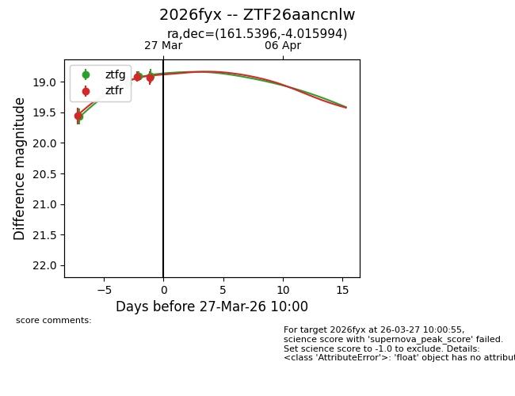
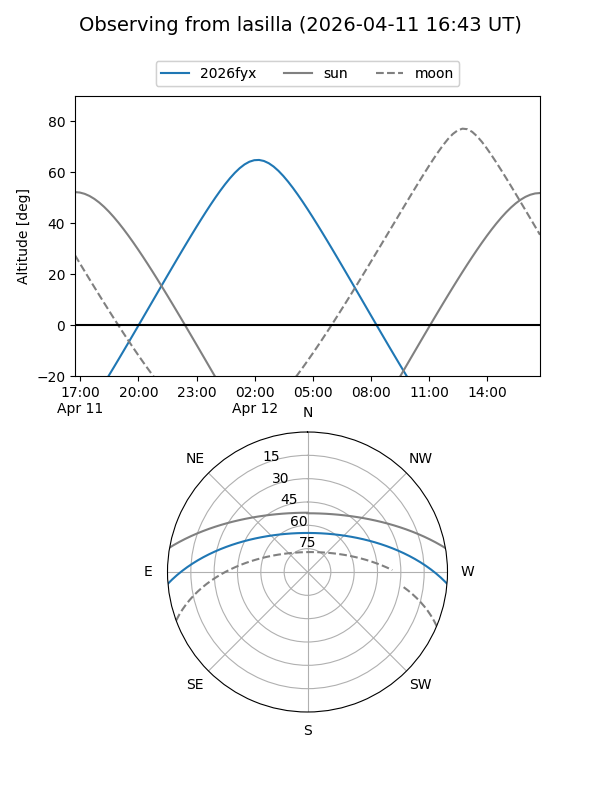
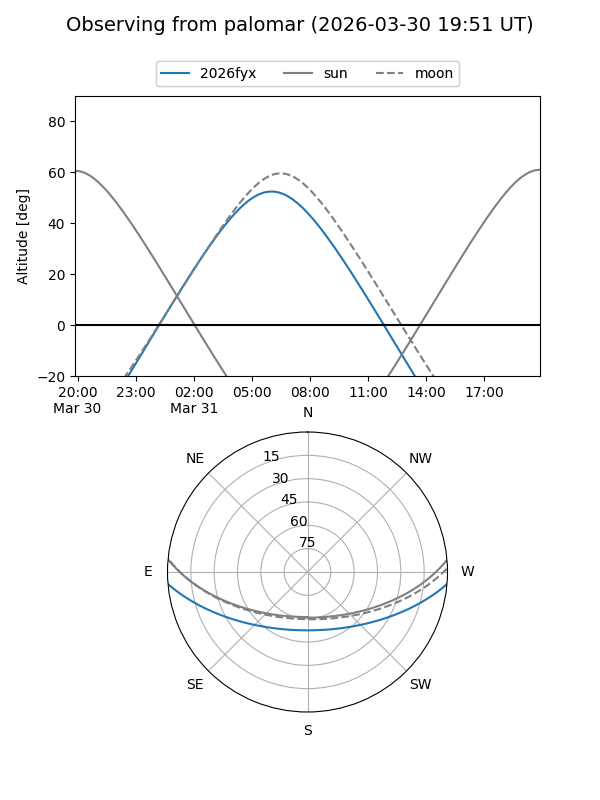
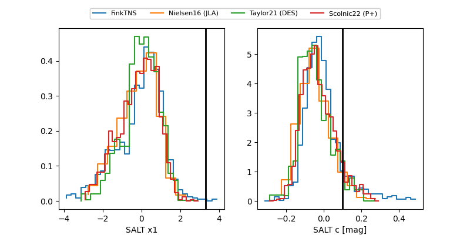

2026fyx
Target 2026fyx at 2026-03-27 10:03
Aliases and brokers:
FINK: link
Lasair: link
ALeRCE: link
TNS: link
YSE: link
alt names
ZTF26aancnlw (ztf,fink_ztf)
2026fyx (tns,yse)
Coordinates:
equatorial (ra, dec) = 161.5396,-4.01599
equatorial (HMS+DMS) = 10:46:09.50,-04:00:57.58
galactic (l, b) = (253.9415,+46.59344)
Flags:
Photometry:
last ztfg=18.90, ztfr=18.93
5 ztfg, 4 ztfr detections
Lightcurve

Visibility


Additional plots
